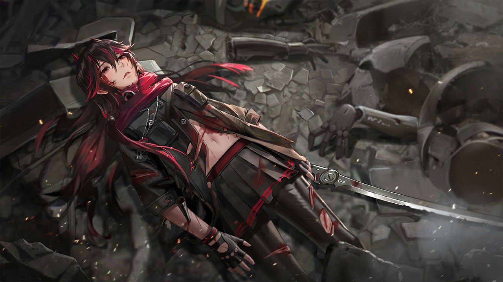

STORY
剧情回顾
灰鸦小队与间章相关角色。悬停看连线，点角色进入对应个人剧情。不是官方关系图。
悬停角色：高亮关系 · 点击：进入对应间章
过境
MINDTRACE
SCAN
DEMO LOCAL CACHE READY DATA / STANDBY LUCIA · PLUME
DATA
CHARACTER SELECT
01 / 05
立绘来源：GRAY RAVENS Wiki 公开肖像。版权归库洛游戏所有。
STORY
灰鸦小队与间章相关角色。悬停看连线，点角色进入对应个人剧情。不是官方关系图。
悬停角色：高亮关系 · 点击：进入对应间章

00 序章
主线公开骨架：0-0 进入序章。开场是人类阵线演讲，舞台上没有机兵立绘。
还没有跟帖。看完可以留下你的看法。
BOARD